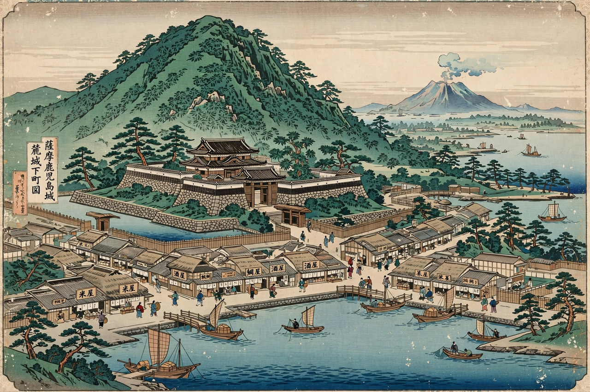

Satsuma Domain
薩摩藩
| Capital | Kagoshima |
|---|---|
| Country | Japan (Tokugawa shogunate) |
| Daimyō clan | Shimazu |
| Established | 1602 |
| Abolished | 1871 |
| Today part of | Kagoshima Prefecture |

The Satsuma Domain (薩摩藩, Satsuma-han), also known as the Kagoshima Domain, was a domain (han) of the Tokugawa shogunate of Japan during the Edo period from 1602 to 1871. It was located in Satsuma and Ōsumi Provinces in southern Kyushu, with its capital at Kagoshima, and was ruled throughout its history by the Shimazu clan. Satsuma was one of the most powerful and wealthy domains in Japan, and played a decisive role in the overthrow of the Tokugawa shogunate and the Meiji Restoration.
History
The Shimazu had ruled Satsuma since the Kamakura period. After Shimazu Yoshihiro's defeat on the side of the Western Army at the Battle of Sekigahara in 1600, the domain was nonetheless allowed to retain its lands, an unusual outcome attributed to the clan's fierce resistance and the difficulty of conquering its remote territory. In 1609 the domain invaded the Ryukyu Kingdom, bringing it under Satsuma's control while nominally leaving it a tributary of China; this arrangement allowed Satsuma to profit from trade with China through Ryukyu.
Satsuma maintained a highly militarized society with an unusually large samurai class. Its ships and merchants were active in trade through the port of Kagoshima, and by the nineteenth century the domain had accumulated both wealth and modern military technology, partly through the efforts of the reforming lord Shimazu Nariakira.
Role in the Meiji Restoration
During the Bakumatsu period, Satsuma, first in rivalry and then in alliance with the Chōshū Domain, became a driving force against the shogunate. The Satchō Alliance of 1866 united the two domains, and their forces defeated the shogunate in the Boshin War of 1868–1869. Key figures from Satsuma, including Saigō Takamori, Ōkubo Toshimichi, and Kuroda Kiyotaka, became leading statesmen of the Meiji government. Satsuma officers conducted a diplomatic embassy abroad in the Iwakura Mission of 1871–1873.
The domain was abolished in 1871 with the abolition of the han system and became Kagoshima Prefecture. Discontent among Satsuma's former samurai culminated in the Satsuma Rebellion of 1877, led by Saigō Takamori against the Meiji government he had helped to create.